전자산업기사 (2002-09-28 기출문제)
1과목: 전자회로
1. 12V, 100mA의 전원 장치가 있다. 부하가 연결될 때 전원 장치의 출력 전압이 10V가 되면 이 전원 장치의 전압변동율은 몇 %인가?
- 10%
- 15%
- 20%
- 25%
(정답률: 54%)

2. 이미터 폴로어 달링톤(Darlington) 접속을 하는 이유 중 가장 적합한 것은?
- 전압궤환율 감소
- 전압이득 증대
- 출력저항 증대
- 입력저항 증대
(정답률: 38%)
3. 그림과 같은 증폭기에서 Re에 병렬로 바이패스 콘덴서를 접속하면?
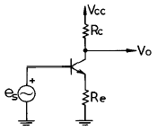
- 발진한다.
- 이득이 감소한다.
- 이득이 증가한다.
- 잡음이 증가한다.
(정답률: 47%)
4. 전류궤환 증폭기의 출력 임피던스는 궤환이 없을 때와 비교하면?
- 감소한다.
- 증가한다.
- 변화가 없다.
- 증가 또는 감소한다.
(정답률: 63%)
5. 이상적인 연산증폭기의 특성이 아닌 것은?
- 입력 임피던스가 무한대이다.
- 출력 임피던스가 무한대이다.
- 특성이 온도에 따라 변화가 거의 없다.
- 전압 이득이 무한대이다.
(정답률: 77%)
6. 다음 회로에서 부하 저항(RL)의 전류(IL)는?
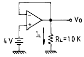
- 0.2[㎃]
- 0.4[㎃]
- 0.6[㎃]
- 0.65[㎃]
(정답률: 78%)
7. 다음과 같은 회로가 갖는 기능은?
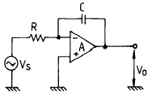
- 가산기
- 미분기
- 부호변환기
- 적분기
(정답률: 61%)
8. 차동 증폭기에서의 CMRR(동상제거비)에 대한 설명 중 옳은 것은?
- CMRR이 클 수록 좋다.
- CMRR이 작을 수록 좋다.
- CMRR가 클 수록 차동 증폭기 오차가 증대한다.
- CMRR와 출력에서의 오차와는 무관하다.
(정답률: 87%)
9. B급 푸시풀(push-pull) 증폭기의 특징이 아닌 것은?
- 최대 효율은 이론상 78.5[%]이다.
- 최대 출력은 이론상 한쪽 최대 컬렉터 손실의 5배이다.
- 크로스 오버(cross over) 일그러짐이 있다.
- 무신호시 컬렉터에 수 ㎃의 전류가 흐른다.
(정답률: 45%)
10. 다음과 같은 발진회로 구성에서 발진조건으로 적합한 것은? (단, 이다.)
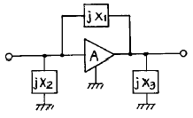
- X1+X2+X3=0
- X1+X2+X3=∞
- X1+X2+X3=-1
- X1+X2+X3=1
(정답률: 64%)
11. 디지털(Digital) 방식에 의한 변조를 사용한 것은?
- 컬렉터 변조
- 베이스 변조
- 펄스진폭변조
- 펄스부호변조
(정답률: 70%)
12. 반송파 전력이 20[kW] 일 때 변조율 70[%]로 진폭 변조 하였다. 상측파대 전력은?
- 20[kW]
- 10[kW]
- 4.9[kW]
- 2.45[kW]
(정답률: 36%)
13. 외부에서 입력 신호를 가(加)하지 않아도 출력이 나타나는 회로는?
- 무안정 멀티바이브레이터
- 차동 증폭기
- 연산 증폭기
- 완충 증폭기
(정답률: 63%)
14. 그림과 같이 2개의 Inverter(인버터)를 연결했을 때의 출력은?
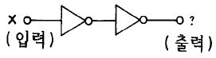
- X
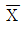
- 0
- 1
(정답률: 90%)
15. (11001)2를 10진수로 변환하면?
- 5
- 11
- 25
- 31
(정답률: 76%)
16. 다음 논리 식을 간단히 하면?
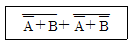
- A
- B
- AB
- A+B
(정답률: 48%)
17. 다음 진리치 표에 맞는 flip-flop 명칭은?
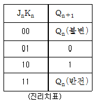
- RS F-F
- T F-F
- D F-F
- JK F-F
(정답률: 82%)
18. BJT와 FET의 설명 중 옳지 않은 것은?
- BJT는 양극성 소자이고, FET는 단극성 소자이다.
- BJT는 입력 전류에 의해 제어되는 소자이다.
- FET는 입력 전압에 의해 제어되는 소자이다.
- BJT와 FET 둘다 출력 전압이 제어되는 소자이다.
(정답률: 67%)
19. 데이터의 임시 저장을 위하여 사용하기에 가장 편리한 플립플롭은?
- R-S 플립플롭
- J-K 플립플롭
- D 플립플롭
- T 플립플롭
(정답률: 54%)
20. 바이폴라 접합 트랜지스터(BJT)에서 전류 증폭율의 결정 요인이 아닌 것은?
- 베이스 영역의 재결합
- 베이스 폭
- 컬렉터 도달율
- 이미터 폭
(정답률: 37%)
2과목: 전기자기학 및 회로이론
21. 그림과 같은 정 K형 필터에 대한 기술 중 옳은 것은? (단, K는 공칭 임피던스이다.)
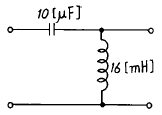
- 고역필터이며, K=40[Ω]이다.
- 저역필터이며, K=40[Ω]이다.
- 고역필터이며, K=16[Ω]이다.
- 저역필터이며, K=16[Ω]이다.
(정답률: 63%)
22. 10Ω 저항과 10.6mH 인덕터가 60㎐ 정현파 교류 전원에 직렬로 연결되어 있다. 이 회로의 임피던스는?
- j4Ω
- 10+j4Ω
- j10Ω
- 4+j10Ω
(정답률: 54%)
23. 투자율과 유전률로 이루어진 식 1/√με의 단위는? (문제 오류로 보기 내용이 정확하지 않습니다. 정확한 내용을 아시는분께서는 오류신고를 통하여 내용 작성 부탁 드립니다. 정답은 1번입니다.)
- m/s
- C/H
- Ω
- 복원중
(정답률: 79%)
24. 자기 인덕턴스 L1, L2 가 각각 4[mH], 9[mH]인 두 코일이 이상결합(理想結合)되었다면 상호 인덕턴스 M은 몇 [mH]가 되는가?
- 6
- 6.5
- 9
- 36
(정답률: 64%)
25. 정현파 교류 전압의 파형률은?
- 2√2/π
- π/√2
- √2/π
- π/2√2
(정답률: 55%)
26. 전하 Q1, Q2간의 작용력이 F1이고 이 근처에 전하 Q3를 놓았을 경우의 Q1과 Q2간의 전기력을 F2라 하면 F1과 F2의 관계는 어떻게 되는가?
- F1＞F2
- F1=F2
- F1＜F2
- Q3의 크기에 따라 다르다.
(정답률: 77%)
27. e=100√2sin (100πt-π/3)[V]인 정현파 교류 전압의 주파수 [Hz]는?
- 314
- 100
- 60
- 50
(정답률: 50%)
28. 다음 ABCD와 h-parameter 중 차원이 있는 것은?
- A
- D
- h12
- h22
(정답률: 20%)
29. 다음 그림과 같이 R=1[Ω],L=1[H]인 직렬회로에 V=1[V]의 전압을 가하고 t=0때 스위치 S를 닫았다. t=τ (시정수)때의 전류 i(τ)는 몇 [A]인가?
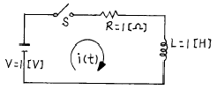
- 1
- 0.707
- 0.632
- 0.368
(정답률: 53%)
30. 자기인덕턴스 0.⑤H의 회로에 흐르는 전류가 매초 500A의 비율로 증가할 때 자기 유도 기전력의 크기는 몇 V 인가?
- 2.5
- 25
- 100
- 1000
(정답률: 93%)
31. Φ=Φmsinωt[Wb]인 정현파로 변화하는 자속이 권수 n인 코일과 쇄교할 때의 유기기전력의 위상은 자속에 비해 어떠한가?
- π/2 만큼 빠르다.
- π/2 만큼 늦다.
- π만큼 빠르다.
- π만큼 늦다.
(정답률: 59%)
32. 비유전률 εs=5인 베이크라이트의 한점에서 전계의 세기가 E=104 V/m일 때 이 점의 분극률 x는 몇 H/m 인가?
- 10-9/9π
- 10-9/18π
- 10-9/27π
- 10-9/36π
(정답률: 42%)
33. 자속밀도 0.6Wb/m2의 자계 중에 20cm의 도체를 자계와 직각으로 50m/s의 속도로 움직일 때 도체에 유기되는 기전력은 몇 V 인가?
- 0.6
- 6
- 60
- 600
(정답률: 53%)
34. 자기인덕턴스 L1, L2[H], 상호인덕턴스 M[H]인 두 회로에 자속을 돕는 방향으로 각각 Ｉ1, Ｉ2[A]의 전류가 흘렀을 때 저장되는 자계의 에너지는 몇 Ｊ 인가?
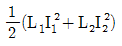
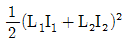
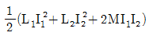
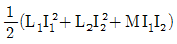
(정답률: 64%)
35. 무한평면도체로부터 a[m]의 거리에 점전하 Q[C]가 있을때 이 점전하와 평면도체간의 작용력은 몇 N 인가?
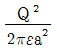
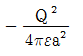
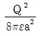
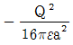
(정답률: 47%)
36. "몇 개의 전압원과 전류원이 동시에 존재하는 회로망에 있어서 회로전류는 각 전압원이나 전류원이 각각 단독으로 가해졌을 때 흐르는 전류를 합한 것과 같다" 라고 정의한 정리는?
- 상반정리(가역정리)
- 중첩의 정리
- 테브난의 정리
- 밀만의 정리
(정답률: 86%)
37. 그림과 같은 2개의 동심구에서 내구의 반지름이 a[m], 외구의 안지름이 b[m], 외구의 바깥지름이 c[m]일 때 전위계수 P11을 구하면?
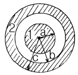
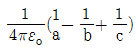
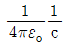
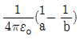
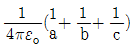
(정답률: 63%)
38. f(t)=A를 Laplace 변환하면?
- A
- A/s
- As
- 1
(정답률: 78%)
39. 평행판콘덴서의 극판사이가 진공일 때의 용량을 Co, 비유전률 εs 의 유전체를 채웠을 때의 용량을 C 라할 때, 이들의 관계식은?
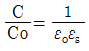
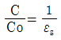
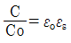
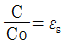
(정답률: 43%)
40. R-C 직렬 회로에 직류 전압을 가할 때 시정수(τ)를 표시하는 것은?
- C/R
- CR
- 1/CR
- R/C
(정답률: 72%)
3과목: 전자계산기일반
41. 패리티 비트의 오류 검출은 몇 개 비트까지 가능한가?
- 1개
- 2개
- 3개
- 검출 불가
(정답률: 62%)
42. 스택 구조에 관한 설명 중 옳지 않은 것은?
- CPU가 가지고 있는 활용도가 높은 기법
- 지수를 세는 번지 레지스터를 가진 메모리이며, 이 레지스터에 다른 값들도 저장할 수 있다.
- 읽고 쓰는 것이 가능하다.
- 스택에서 꺼내는 동작을 Push라 한다.
(정답률: 62%)
43. 다음 그림에서 A의 값은 1010, B의 값은 0011이 입력될 때 출력 X 값은?
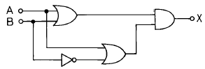
- 1100
- 0011
- 1010
- 0101
(정답률: 62%)
44. 프로그램 인터럽트 요인 발생 시 반드시 확인해야 할 CPU 상태가 아닌 것은?
- 프로그램 카운터의 내용
- 모든 레지스터의 내용
- 상태 조건의 내용
- 현재 명령의 내용
(정답률: 34%)
45. 마이크로프로세서, 메모리, 주변 인터페이스 상호간에 필요한 정보를 교신하는데 쓰이는 공동의 전송선로는?
- bus
- buffer
- multiplexer
- decoder
(정답률: 82%)
46. 소프트웨어의 종류에 속하지 않는 것은?
- 운영체제
- 언어 처리 프로그램
- 중앙처리장치
- 컴파일러
(정답률: 52%)
47. 프로그램의 잘못을 고쳐 나가는 작업을 무엇이라 하나?
- 코딩(CODING)
- 디버깅(DEBUGGING)
- 펀칭(PUNCHING)
- 레코딩(RECORDING)
(정답률: 92%)
48. 마이크로컴퓨터에서의 Bus 중 양방향성을 가진 Bus는?
- Address Bus
- Control Bus
- Data Bus
- Interrupt Bus
(정답률: 82%)
49. 다음 레지스터들 중에서 Read하거나 Write할 때 데이터가 반드시 거쳐야 하는 레지스터는?
- MAR(Memory Address Register)
- MBR(Memory Buffer Register)
- PC(Program Counter)
- IR(Instruction Register)
(정답률: 58%)
50. 직접 액세스(Directed Access)가 불가능한 보조 기억장치는?
- 자기 디스크
- 자기 드럼
- 자기 테이프
- 플로피 디스크
(정답률: 43%)
51. 마이크로프로세서가 기억장치 및 입曺출력기기와 연결을 위해 가져야 할 것이 아닌 것은?
- 데이터 버스
- 어드레스 버스
- 결합 버스
- 제어선
(정답률: 64%)
52. 명령어가 주기억장치에서 꺼내어 져서 해독될 때까지를 무슨 주기라 하는가?
- 실행 주기
- 인출 주기
- 해독 주기
- 로드 주기
(정답률: 56%)
53. 인터럽트를 발생하는 장치들을 직렬로 연결하여 우선 순위에 따라 처리하게 하는 방식은?
- 다중채널 방식
- Daisy-chain 방식
- Polling 방식
- Interrupt Control 방식
(정답률: 79%)
54. 다음 중 연결이 옳지 않은 것은?
- -판단
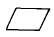
-처리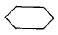
-준비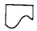
-프린터장치
(정답률: 55%)
55. 시스템 전체의 작업 중 컴퓨터 처리를 하는 부분을 뽑아내어 그 처리 순서를 도해한 Flow chart는?
- System flow chart
- Program flow chart
- General flow chart
- Detail flow chart
(정답률: 35%)
56. 컴퓨터 자료처리 방식의 분류에 속하지 않는 것은?
- 중앙집중식 처리
- 온라인 실시간처리
- 시분할처리
- 일괄처리
(정답률: 18%)
57. 마이크로프로세서의 구성 부분 중 산술연산이나 논리연산을 행하는 곳은?
- 연산회로
- 레지스터
- 제어회로
- 기억장치
(정답률: 82%)
58. 컴퓨터 시스템의 처리 효율을 높이기 위한 방법으로 여러개의 마이크로프로세서를 사용하여 동시에 데이터를 처리하는 방식은?
- multitasking
- multiprocessing
- multiprogramming
- multiphase programming
(정답률: 82%)
59. 특정의 비트 또는 특정의 문자를 삭제하기 위해 가장 필요한 연산은?
- OR 연산
- MOVE 연산
- COMPLEMENT 연산
- AND 연산
(정답률: 83%)
60. 정기적으로 refresh 신호를 가하면서 기억 내용을 보존해야 하는 반도체 기억소자는?
- EPROM
- PROM
- DRAM
- SRAM
(정답률: 63%)
4과목: 전자계측
61. 기록 계기, 전자 오실로그래프, 정전형 계기에 널리 사용되는 제동 장치는?
- 액체 제동
- 스프링 제동
- 공기 제동
- 전자 제동
(정답률: 33%)
62. 상호 인덕턴스를 측정하기 위하여 그림(a)와 같이 접속하면 20[mH], 그림(b)와 같이 접속하면 16[mH]였다. 상호 인덕턴스는?
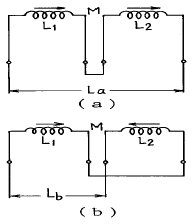
- 1[mH]
- 4[mH]
- 9[mH]
- 4/5[mH]
(정답률: 36%)
63. 동조형 주파수계에 속하지 않는 것은?
- 그리드 딥 미터
- 공동형 파장계
- 헤테로다인 주파수계
- 흡수형 주파수계
(정답률: 50%)
64. 전해액이나 접지 저항을 측정할 때, 교류를 사용하는 이유 중 옳은 것은?
- 전극 표면의 분극 작용을 방지하기 위하여
- 전극 내부의 분극 작용을 방지하기 위하여
- 습기를 제거하기 위하여
- 접지 저항보다 작은 저항 값을 지시 하는 것을 방지하기 위하여
(정답률: 69%)
65. 다음은 측정용 발진기 구성도이다. 옳은 것은?
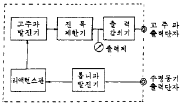
- 소인발진기
- 비트발진기
- 음차발진기
- CR 발진기
(정답률: 77%)
66. 오실로스코프에 다음과 같은 파형이 나타날 때 수직, 수평의 주파수 비는?
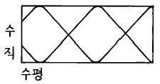
- 수직:수평=3:2
- 수직:수평=2:3
- 수직:수평=2:5
- 수직:수평=5:2
(정답률: 52%)
67. 저주파 발진기 중 주파수 안정도가 제일 좋은 것은?
- 음차 발진기
- CR 발진기
- 구형파 발진기
- beat 주파 발진기
(정답률: 40%)
68. 전압의 참값이 100[V]인데 측정값이 100.2 [V]이었다. 이 전압계의 오차 백분율은?
- 0.1[%]
- 0.2[%]
- 0.3[%]
- 0.4[%]
(정답률: 82%)
69. 가동철편형 계기에서 주파수의 영향을 보상하기 위하여 직렬 저항에 병렬로 삽입한 콘덴서의 크기는?
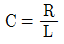
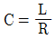
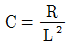
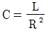
(정답률: 54%)
70. Q 미터에서 코일의 실효 Q와 동조용 콘덴서 C의 값을 알면 측정할 수 있는 것은?
- 코일의 실효 Q의 측정
- 코일의 실효 인덕턴스의 측정
- 코일의 실효 저항의 측정
- 코일 Q의 참값 측정
(정답률: 34%)
71. 오실로스코프를 사용하여 측정이 불가능한 것은?
- 전압
- coil의 Q
- 주파수
- 변조도
(정답률: 88%)
72. 다음과 같은 블록도를 갖는 측정은 무슨 특성을 측정하고자 하는 것인가?
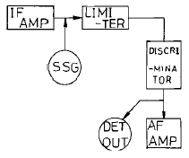
- 주파수 변별기의 특성 측정
- 중간주파 증폭기의 특성 측정
- 저주파 증폭기의 특성 측정
- 진폭 제한기의 특성 측정
(정답률: 57%)
73. 계기 정수 2400[회/kWh]의 적산 전력계가 30초에 10회전 했을 때의 전력은?
- 1250[W]
- 1000[W]
- 750[W]
- 500[W]
(정답률: 35%)
74. 전압 제어 발진기 방식을 사용한 디지털 전압계의 구성 요소가 아닌 것은?
- 디지털 표시장치
- 기준시간 발생기
- 순서기
- 정류기
(정답률: 52%)
75. 디지털 계측기의 장점을 설명한 것 중 옳지 않은 것은?
- 일반적으로 연속량을 측정할 수 있다.
- 측정이 매우 쉽고, 신속히 이루어진다.
- 측정값을 읽을 때 개인적 오차가 발생하지 않는다.
- 정도가 높은 측정이 가능하다.
(정답률: 80%)
76. 디지털 카운터에 의한 1000[㎒] 이상의 주파수 측정 방식 중 옳은 것은?
- 컨버터(converter)방식 및 샘플링(sampling)방식
- 일반 계수형 주파수계
- 프리셋 카운터(preset counter)
- 토탈 카운터(total counter)
(정답률: 36%)
77. 임피던스 Z1∼Z4로 구성된 교류 브리지에서 평형 조건이 되는 것은?
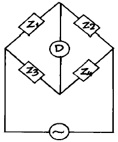
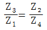
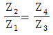
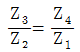
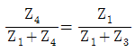
(정답률: 52%)
78. 헤테로다인(heterodyne) 주파수계의 교정 방법이 아닌 것은?
- 보간발진기를 사용하는 방법
- 수정발진기를 직접 비트(beat)시키는 방법
- 표준 전파로 교정하는 방법
- 2중 비트(double beat)를 사용하는 방법
(정답률: 62%)
79. 예시도는 오웬(OWEN) 브리지를 나타내고 있다. 평형조건으로 성립되는 것은?
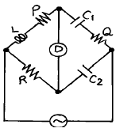
- L=C1QR
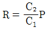
- L=C2PR
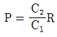
(정답률: 28%)
80. 스트로보스코프(stroboscope)로서 측정할 수 있는 것은?
- 전류
- 조도
- 전압
- 회전수
(정답률: 73%)